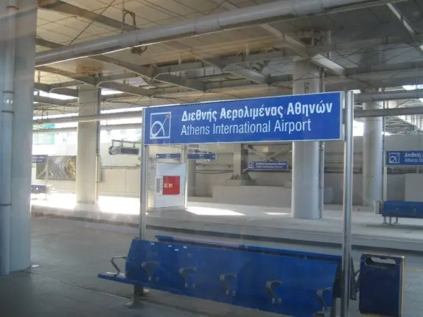
Fare trap · the airport zoneThe airport metro is a separate zone starting at Doukissis Plakentias: €9 single, €16 return. A normal €1.20 city ticket will not open the barrier. [24]
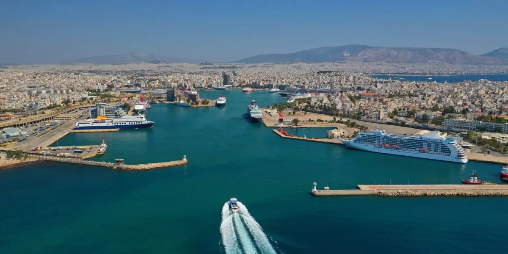
Three ports, two vessel classes, one wind. The board below is the whole decision: which quay, which hull, how much of your week each crossing eats — and the four legs where the aeroplane finally wins.
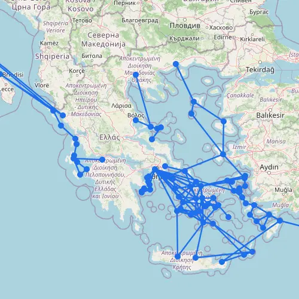
The network Athens sits at the middle of — most of those lines start at one of three quays [1].

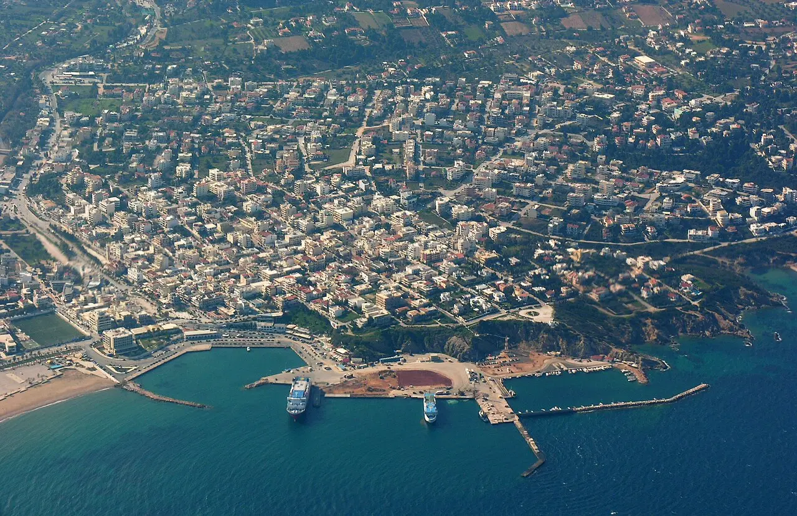

| Destination | Gate | Duration | From | Frequency | Meltemi risk |
|---|---|---|---|---|---|
AEGINASaronic · Piraeus |
E9 | 30 min – 1 h 30 | €9.50 | frequent | ▲ low |
 HYDRASaronic · Piraeus HYDRASaronic · Piraeus |
E9 | 1 – 2 h | €15 | 6–8 daily | ▲ low |
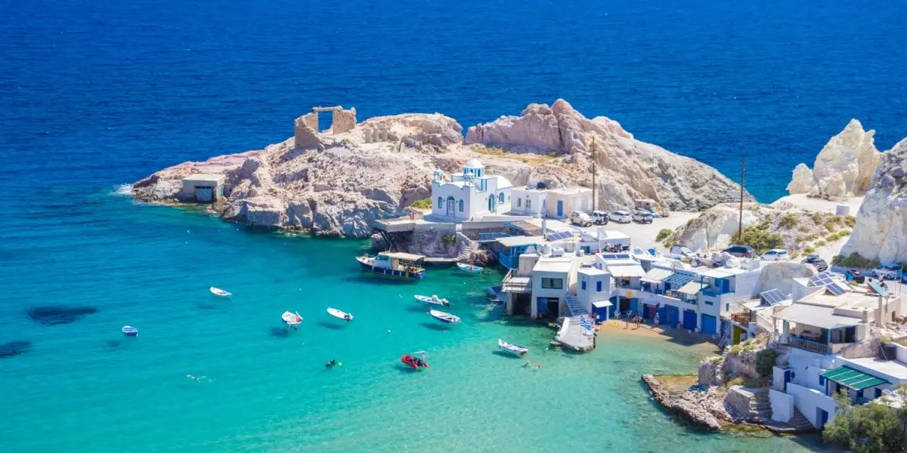 MILOSCyclades · Piraeus |
E6/E7 | 2 h 30 – 7 h 30 | €33 | daily | ▲▲ medium |
PAROSCyclades · Piraeus |
E6/E7 | 2 h 45 – 5 h | €40.50 | daily | ▲▲ medium |
 NAXOSCyclades · Piraeus NAXOSCyclades · Piraeus |
E6/E7 | 3 h 15 – 6 h | €42 | daily | ▲▲ medium |
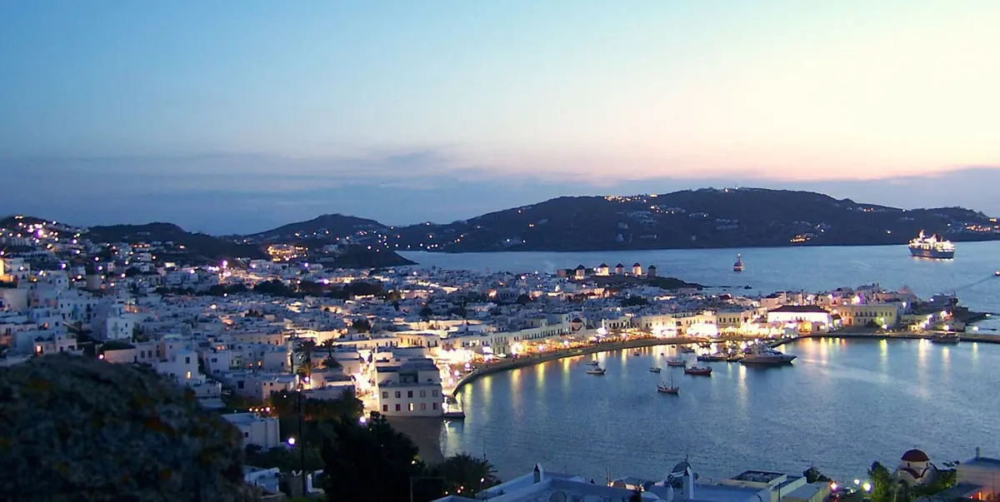 MYKONOSCyclades · Piraeus |
E6/E7 | 2 h 40 – 6 h | €43 | daily | ▲▲▲ high |
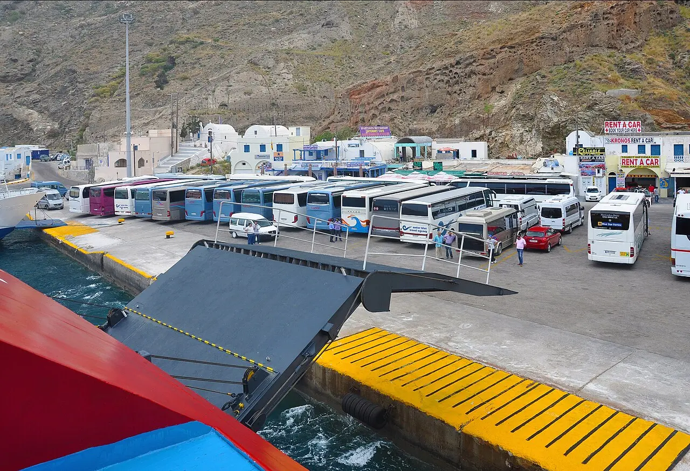 SANTORINICyclades · Piraeus |
E1 | 3 h 55 – 8 h | €39 | up to 9 daily | ▲▲ medium |
HERAKLIONCrete · Piraeus |
E1 | 7 – 13 h | €27.50 | up to 6 daily | ▲ fly instead |
RHODESDodecanese · Piraeus |
E1 | 12 – 22 h | €46.50 | 1–2 daily | ▲ fly instead |
ANDROSCyclades · Rafina |
RAF | — | €25 | up to 11 daily | ▲▲▲ high |
TINOSCyclades · Rafina |
RAF | — | €30 | up to 12 daily | ▲▲▲ high |
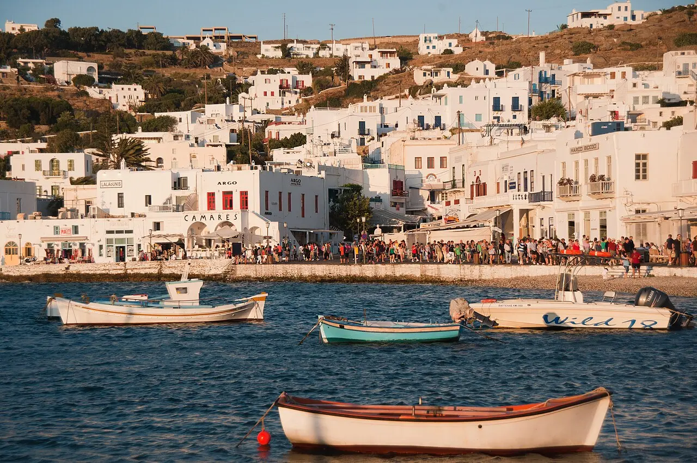 MYKONOSCyclades · Rafina |
RAF | 2 h 05 – 4 h 40 | €35.50 | up to 10 daily | ▲▲▲ high |
KEACyclades · Lavrio |
LAV | — | — | seasonal | ▲▲ medium |

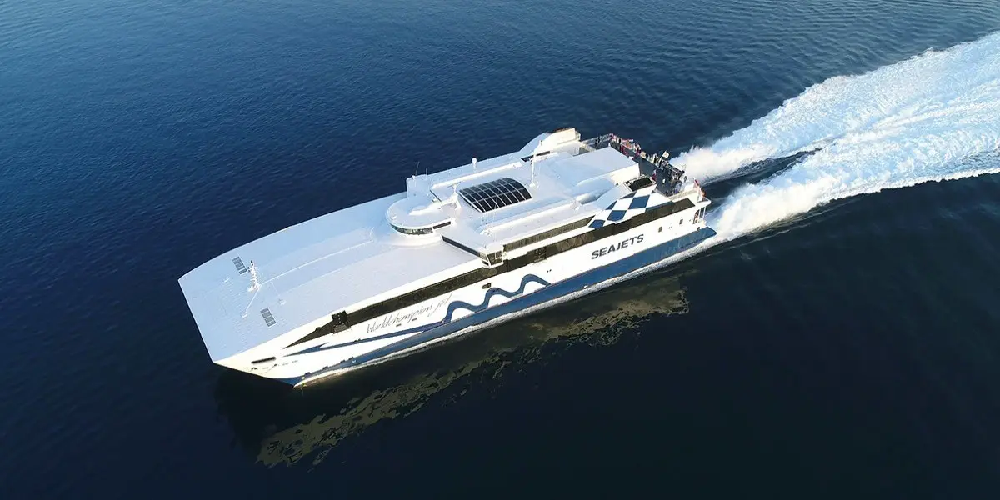
At the gate before departure. Piraeus is big and finding your berth takes time [25].
Door-to-departure from central Athens in July and August. Ferries do not wait [11].
From an international arrival to a Rafina sailing [1].
From an international arrival to a Piraeus sailing [1].
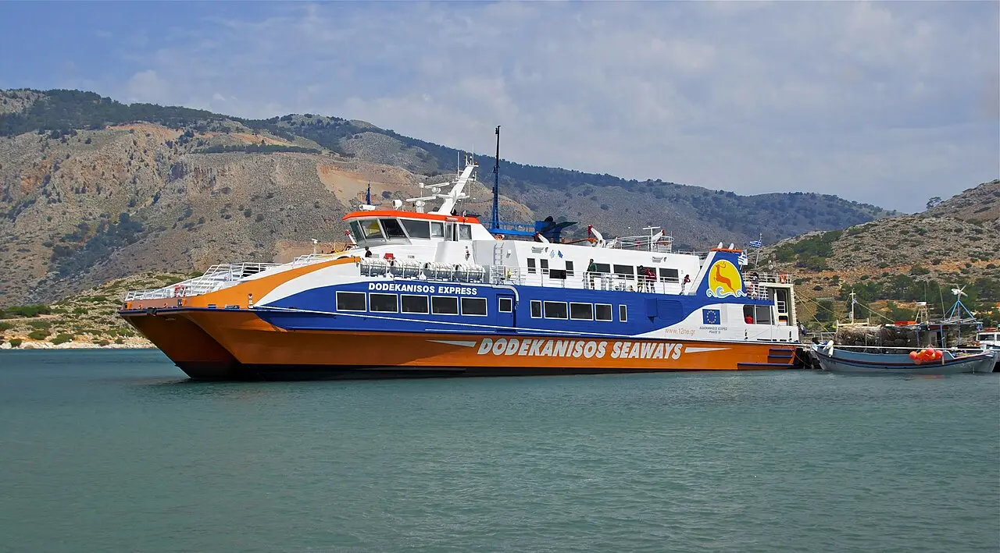
Taking a rental car across needs the rental company's permission in writing, and standard insurance may lapse while the car is at sea [16] [17].
Unauthorised crossings void all protection [17]. Island one-way drop-offs are almost never permitted — rent fresh on each island [16].
About 50 minutes in the air on Aegean, Sky Express, Volotea or Ryanair [18] — the same money as a SeaJets seat [18]. The argument for flying is time, not price.
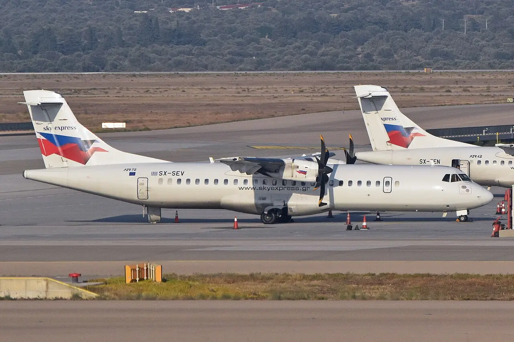
| Carrier | One-way from | August 2026 range | Air time |
|---|---|---|---|
| AEGEAN | €50 [19] | €50–106 [19] | ~50 min [18] |
| SKY EXPRESS | €44 [20] | €52–99 [20] | ~50 min [18] |
| VOLOTEA · RYANAIR | — | — | ~50 min [18] |
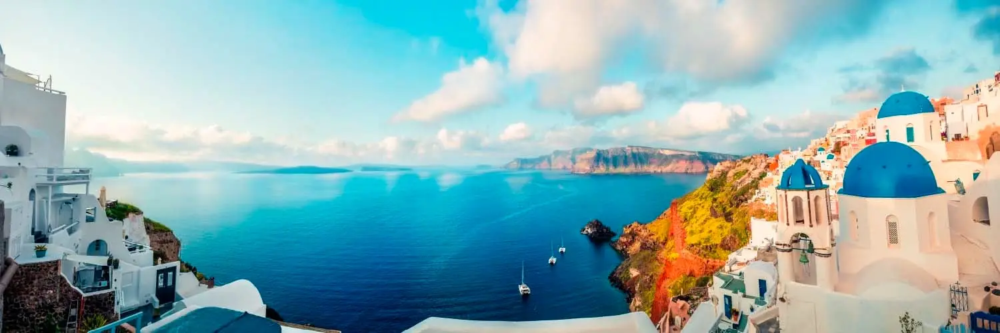
Both lanes on the same eight-hour axis. The 50-minute flight is the small blue block.
Leave the hotel at 07:00 for a near-Cyclades fast boat and you are swimming by 14:00. Everything else eats the day.
On a seven-night trip, budget one full day per island change. Three islands means three lost days — two is the honest maximum.